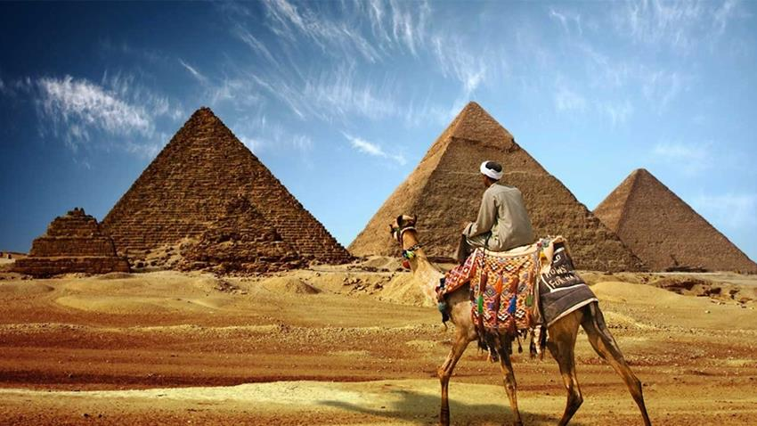
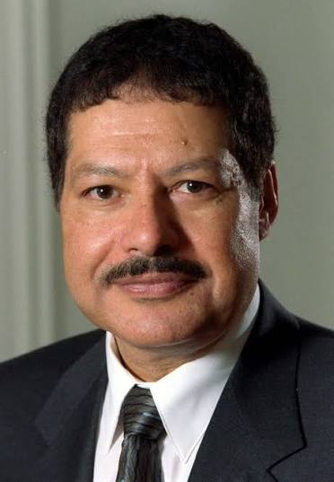
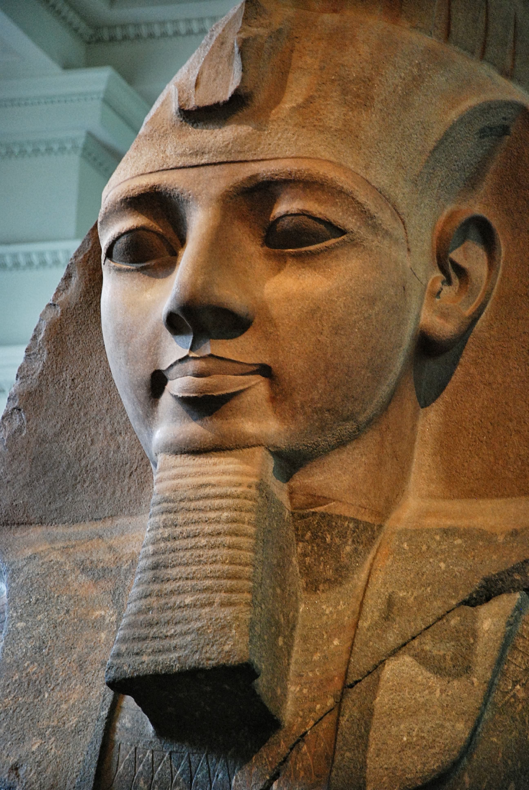
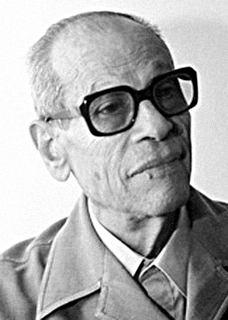
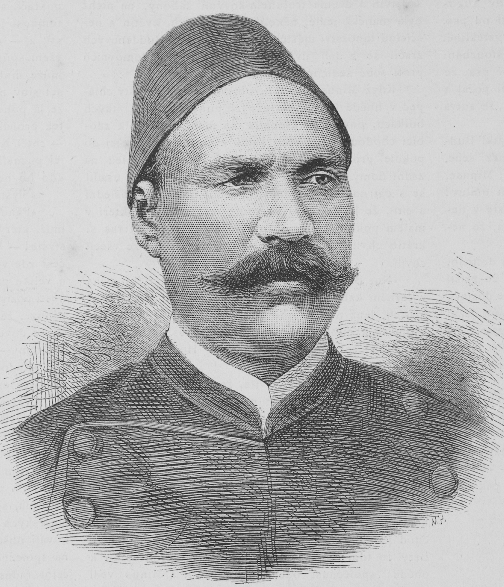
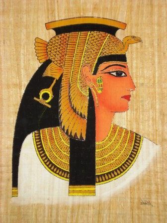
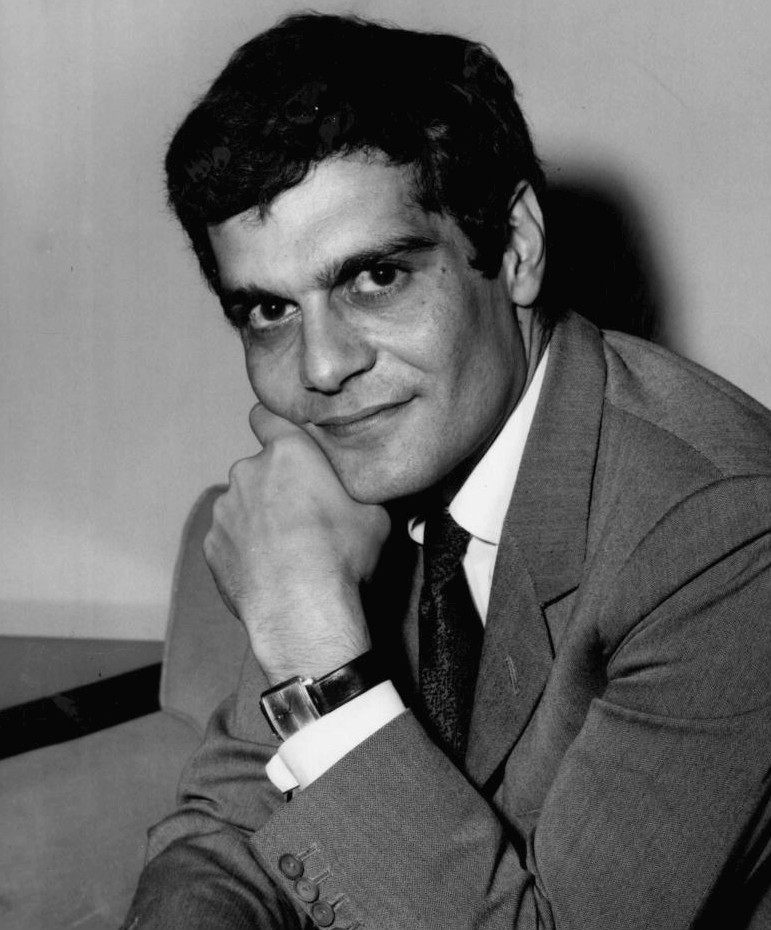
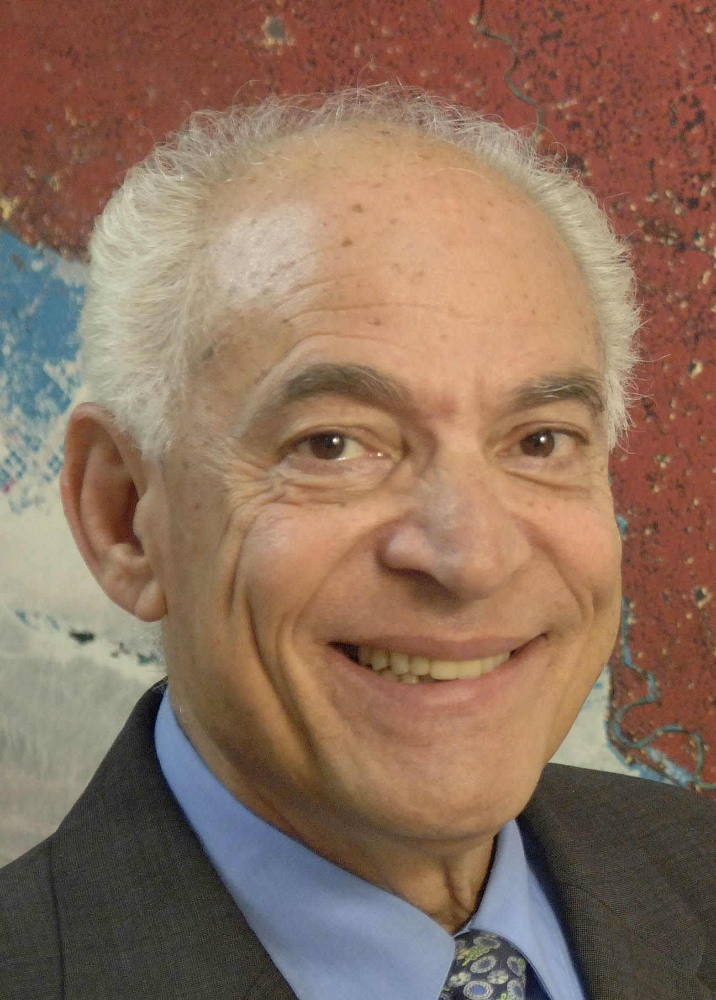

Most famous people in Egypt

Egypt has many great and influential figures who have made important contributions to history, science, art,
sports, and many other fields. These people have achieved remarkable things and have made Egypt proud both
nationally and internationally. In this topic, we will talk about some of the most famous Egyptian figures,
their achievements, and the impact they have had on Egypt and the world.

1. Mohamed Salah
Born : June 15, 1992
Football player
Mohamed Salah is an iconic Egyptian professional footballer and captain of the Egypt national team. Known as
the "Egyptian King," he plays as a right winger and is celebrated as one of the greatest African players and
wingers in football history.

2. Ahmed zewel
Born : February 26, 1946
Dead at : August 2, 2016
chemist
Ahmed Zewail (1946–2016) was an Egyptian-American chemist known as the "father of femtochemistry". He won
the 1999 Nobel Prize in Chemistry for his studies of transition states of chemical reactions using
femtosecond spectroscopy, making him the first Egyptian and Arab to win a Nobel Prize in a scientific field.

3. Ramses ii
Born : around 1303 BC
Dead at : 1213 BC
Egyptian king
Ramses II (also known as Ramses the Great) was the third pharaoh of the Nineteenth Dynasty of Egypt, widely
regarded as the most powerful, celebrated, and influential pharaoh of the New Kingdom. Ruling from 1279 BC
to 1213 BC, his 66-year reign is the second-longest in ancient Egyptian history.

4. Naguib Mahfouz
Born : December 11, 1911
Dead at : August 30, 2006
Writer
Naguib Mahfouz was a famous Egyptian writer and novelist. He won the 1988 Nobel Prize in Literature and
became the first Arabic-language writer to receive the award. His novels often explored Egyptian society,
culture, and everyday life.
5. Umm Kulthum
Born : December 31, 1898
Dead at : February 3, 1975
Singer
Umm Kulthum was one of the most famous and influential Egyptian singers in arab world , she was known for
her powerful voice and emotional performances , her music remains popular across the arab world even decades
after her death.

6. Ahmed Orabi
Born : April 1, 1841
Dead at : September 21, 1911
Military leader
Ahmed Orabi was an Egyptian military officer and political leader who became an important figure in Egypt's history ,
he led the Orabi revolt in the late 19th century , calling for greater equality and reforms in Egypt.

7. Cleopatra VII
Born : 69 BC
Dead at : 30 BC
Queen of Egypt
Cleopatra VII was the last active ruler of the Ptolemaic Kingdom of Egypt , she was known for her intelligence, political skills, and ability to speak several languages , she played an important role in the political struggles of the ancient Mediterranean world.

8. Omar Sharif
Born : April 10, 1932
Dead at : July 10, 2015
Actor
Omar Sharif was a famous Egyptian actor who achieved international success , he appeared in many major films including Lawrence of Arabia and Doctor Zhivago , he became one of the most internationally recognized Egyptian actors.

9. Huda Sha'arawi
Born : June 23, 1879
Dead at : December 12, 1947
Women's rights activist
Huda Sha'arawi was an important Egyptian activist and one of the leading figures in the Egyptian women's movement , she founded the Egyptian feminist union in 1923 and worked to improve women's education and social rights.

10. Farouk El-Baz
Born: January 2, 1938
Scientist and Geologist
Farouk El-Baz is an Egyptian-American scientist and geologist who worked with NASA during the Apollo space program , he played an important role in studying the Moon and helping scientists select landing sites for the Apollo missions , he has also contributed to research on desert environments and remote sensing.